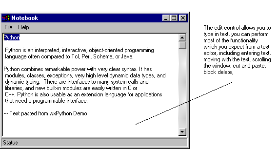

2.5 Adding the Text Control
The next task is to add the main text editing control to our
frame. This control is called wxTextCtrl.
- Open the Designer again to edit the frame, wxFrame1.py.
- On the palette, select the 'Basic Controls' pane. Select the
wxTextControl. hint: You can hold the mouse pointer over each
control to find out its name.
- Click the mouse on the Designer window. A new text control
will be drawn. We do not have to size the control. By default it
will fill all the available area, i.e. between the status bar
and the menu bar.
- The default wxTextControl is a single line entry. We must
indicate to the control, that we want this to be a multi-line
data entry control. To do this we edit the 'style' property in
the Inspector. This is in the Constructor pane.
- Edit the style and set the style to wxTE_MULTILINE. The style
field lets you configure styles for your components. The style
field contains valid python code. To set two logical styles you
would separate them with a '|'. You can see all the available styles
for the wxTextControl in the wxPython online help for the class
wxTextControl.
- Rename the text field. The default name is 'textCtrl1'. Set
the name to 'txtEditor'.
- In the Constructor pane there is a field called 'Value'. This
field contains the default value of the control. Blank out this
field.
- Update the source code with your new control using the Post
button on the Inspector window. Save your source code changes.
- Run your application.
The txtEditor field is automatically sized to the available
space. If you resize the frame, the field resizes. Notice that
wxWindows provides you with a scrollbar. The field will
automatically, scroll if you go beyond the bottom. If you type
line longer than the width of the edit window, they will wrap.
You also have cut and paste functionality, and block marking by
default.
